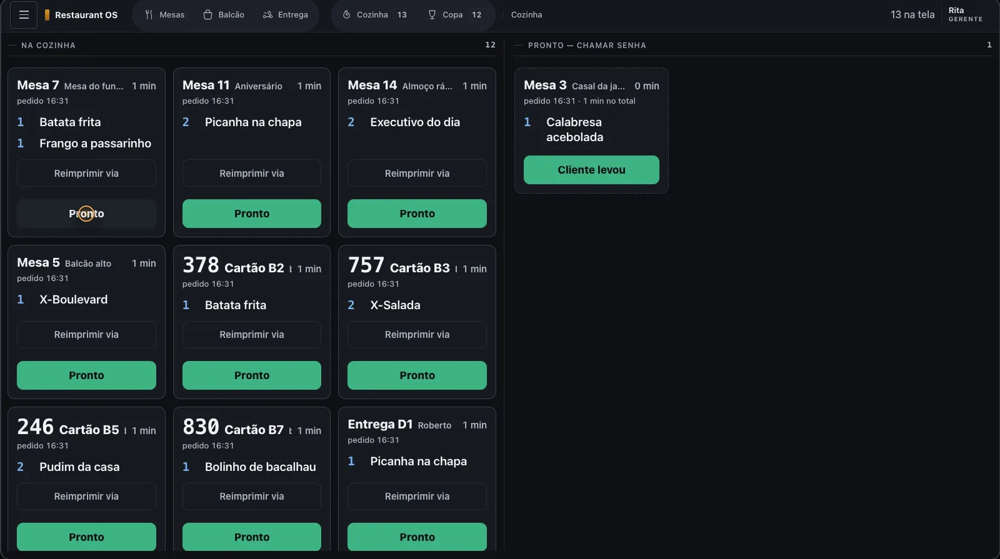
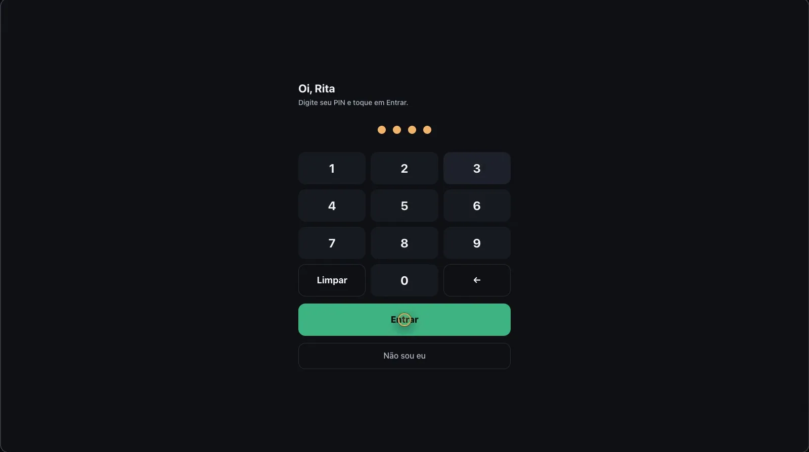
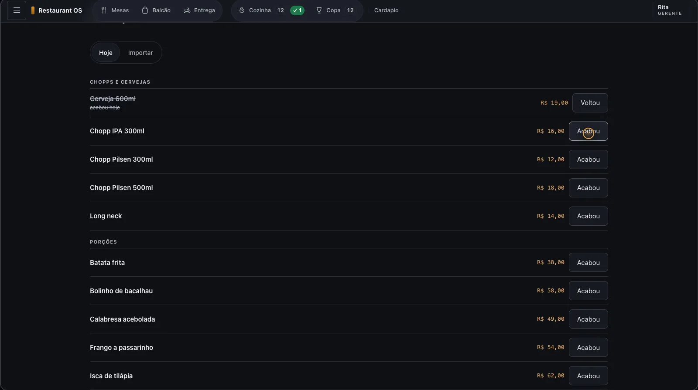
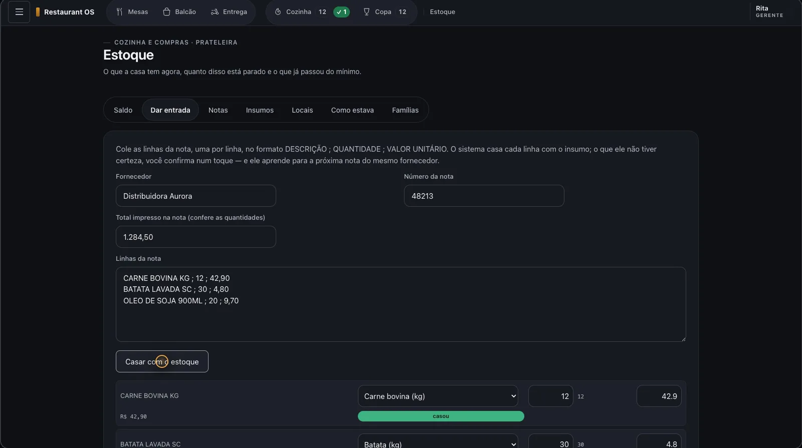
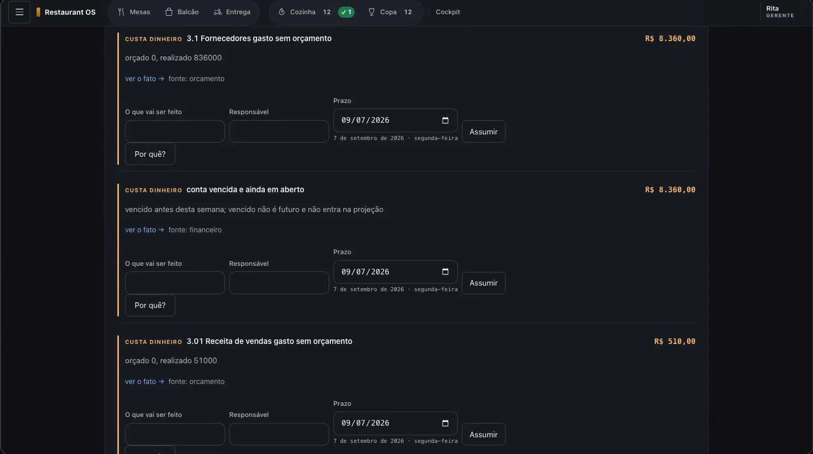
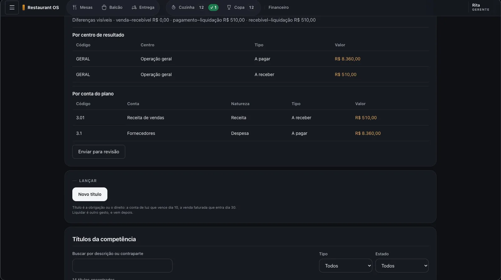
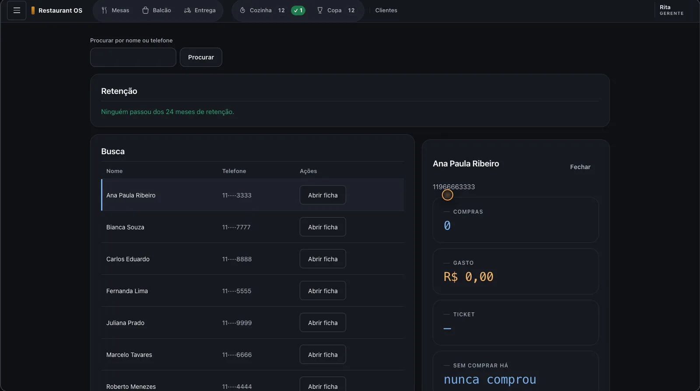

RESTAURANT OS
O bar continua vendendo com a internet caída

O resultado
Um cadastro, um login e um número só. O dono para de conciliar quatro programas no olho e passa a abrir uma tela que mostra o que está fora do lugar, com valor em reais e com dono.
A equipe para de repetir pedido: o que o garçom lança chega sozinho na praça certa da cozinha, e o que acaba some do cardápio com um toque.
O problema
Restaurante pequeno costuma operar com quatro programas que não conversam: o caixa numa ponta, a planilha de estoque na outra, o delivery num terceiro e o contador num quarto. O resultado é cadastro em dobro, cardápio diferente em cada canal e um número financeiro diferente em cada tela.
E quando a internet cai no meio do movimento, o salão volta para o bloco de papel. Este sistema roda dentro da casa. A internet é um bônus, não uma condição.
O que o sistema faz
- Mesas e comandas por pessoa ou por mesa, com transferência de item e envio para a praça certa.
- Venda rápida de balcão e caixa com abertura, sangria, gorjeta e fechamento cego.
- Telas de cozinha e copa: o pedido chega sozinho, ninguém repete nada.
- Delivery próprio e de aplicativo no mesmo quadro, com áreas de entrega e entregadores.
- Estoque por local, entrada colando a nota do fornecedor e custo médio calculado.
- Ficha técnica versionada: só uma aprovação muda o custo do prato.
- Financeiro com plano de contas, conciliação de cartão separando taxa, atraso e sumiço.
- Entrada de mercadoria e contagem de estoque por foto ou áudio no WhatsApp.
Telas







Feito para durar
- 1.852
- testes automáticos em 145 arquivos
- 146
- tabelas num modelo de dados único
- 48
- telas, do garçom ao dono
- 0
- dependências externas: nada para quebrar em atualização
Dinheiro é número inteiro, em centavos
Conta com vírgula erra centavo. Aqui todo valor é inteiro, e há um teste que reprova qualquer campo de dinheiro que aceite número quebrado.
Nada acontece sem deixar rastro
Cada fato e o seu registro são gravados juntos ou nenhum dos dois é. É o que permite responder, três meses depois, por que aquele número mudou.
O botão do caminho quente tem 64 pixels
O garçom opera com uma mão e pressa. Um teste mede o tamanho dos botões que ele mais usa e reprova a tela se encolherem.
Stack
Python 3.12 só com a biblioteca padrão, SQLite, HTML e JavaScript sem framework. Instalador para o computador do salão.